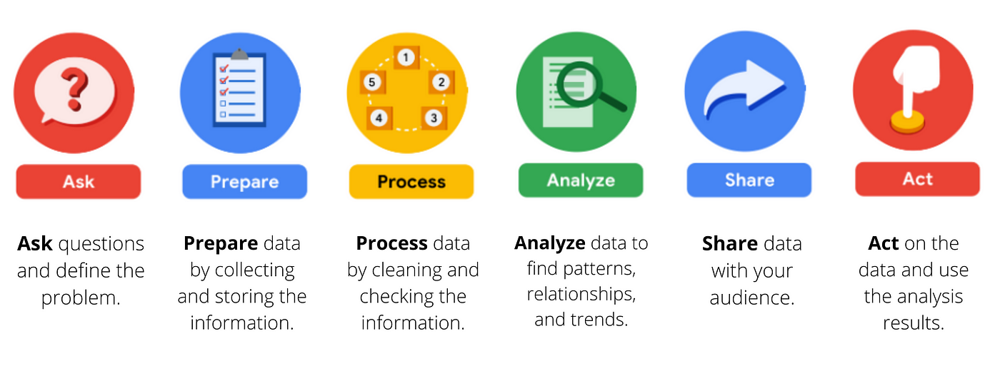

In this data analysis project, I will evaluate the performance of my personal stock investment project. The analysis will follow each phase of the data analysis development cycle show below.

The objective is to visualize performance of my trading strategy compared to Dow Jones. Below is a hypothetical proof of concept of the end result.

Identifying the OLTP sources for ETL. ETL conforms the source data for stock simulation engine. The simulation engine mimicks buying and selling daily stocks.
After the simulation engine completed, it produced the OLAP result mimicking my buying and selling stock activity.
According to the results of simulation engine, while the swings correlate, my trading strategy outperforms Dow Jones.
After analyzing the line chart, it is clear that the next step is to use the strategy to engage in stock trading.
Below is a proof of concept showing stocks and quantity to buy for a particular day.
❮
❯